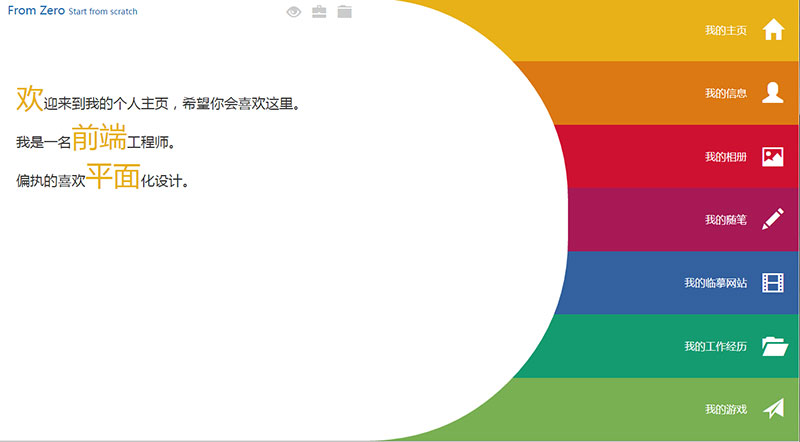

做一个略调皮的个人主页--结构篇

首先感谢大家这么给面子，看到评论我也特别的开心。
不过要实现声明一下，之前忘记说了，这个设计的灵感来自于某设计公司给某银行做的办理系统的一张宣传图，当初看到的时候就特别的喜欢，就拿来做为自己的个人主页啦，大家看到的第一眼就是那张宣传图，之后的动态效果以及别的页面就都是自己的东西啦。
源码是挂在git上的，大家可以随便下。
如果有git的，记得给星哦~~
这里说一下整体的结构情况。首先总共有七个菜单以及五个区域，如下代
/*七个菜单*/
<ul class="indexMenu">
<li data-type="normal"><span class="glyphicon glyphicon-home"></span><em class=" rel">我的主页</em></li>
<li data-type="left"><span class="glyphicon glyphicon-user "></span><em class=" rel">我的信息</em></li>
<li data-type="top"><span class="glyphicon glyphicon-picture "></span><em class=" rel">我的相册</em></li>
<li data-type="right"><span class="glyphicon glyphicon-pencil "></span><em class=" rel">我的随笔</em></li>
<li data-type="bottom"><span class="glyphicon glyphicon-film "></span><em class=" rel">我的临摹网站</em></li>
<li data-type="left"><span class="glyphicon glyphicon-folder-open "></span><em class=" rel">我的工作经历</em></li>
<li data-type="right"><span class="glyphicon glyphicon-send "></span><em class=" rel">我的游戏</em></li>
</ul>
/*五个区域*/
<section class="area_main abs ovh"></section>
<section class="area_right abs"></section>
<section class="area_left abs"></section>
<section class="area_top abs"></section>
<section class="area_bottom abs"></section>
所以有的区域就会要展现两个以上的内容（如有两个left形态以及两个right形态）。所以呢，这里需要进行一下控制，由于其他菜单的内容也很多，所以在第一次点击其他菜单的时候用了一下ajax来load进要展现的页面。
整体我闭了两个包，一个是主页的事件控制，一个是分页的事件控制，然后再load的回调方法里去运行对应的分页控制js代码。
每次点击的时候都做一次判断，判断页面是否已经插入，如果没有，就进行load，如果有，就正常打开。
具体代码如下：
/* 主页菜单点击动作 */
.click(function () {
var $this = $(this), type = $this.data('type'), target = $this.data('target')
, $area = $('.area_'+ type),flag = $area.data('flag') ? $area.data('flag') : '';
if(target && $area.find('.box_'+ target).length == 0) {
$area.append('<div class="scroll-pane box box_'+ target +'"></div>');
$area.find('.box_'+ target).load(target+ ".html",function () {
$area.find('.box_'+ target).jScrollPane();
$.initModule({target : target});
});
}
if(target){
$area.data('flag',target).find('> * ').removeClass('active');
$area.find('.box_'+ target).addClass('active');
}
if($body.hasClass('type_'+ type) && flag == target) return;
menuClickType[type]();
});
这里用到了一个滚动条的插件——jScrollPane
这里逻辑可能有些乱，一共是两个flag，一个是target，一个是type，type是区域的标识，target是内容的标识。
如果找不到 box_target 这个元素，那么就加一个，然后用ajax 来 load 进 target.html 这个页面，然后在回调方法 init 对应的方法即可。
分页的构造如下：
/* 区域js加载 */
$(function () {
var moduleMap = {
'myInformation' : myInformation
,'myPhotos' : myPhotos
,'myArticle' : myArticle
,'myRecode' : myRecode
,'myWork' : myWork
,'myGame' : myGame
}
$.extend({
initModule : function (settings) {
var target = settings.target;
moduleMap[target]();
}
});
/* 我的信息 js 加载 */
function myInformation() {}
······
}
这样，整个页面的大体构造就完成了，以后的编写代码只需要在对应的html以及function里书写即可。
注意的是首页是直接写在里面的。就不需要再加新的页了。